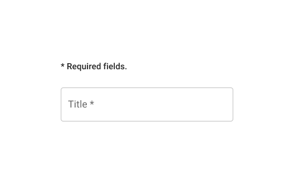

Directrices UX/UI
Tabla de contenidos
Plantilla de página general
Cuadrícula de datos
Diálogo
💡 Use el componente Dialog en lugar de un modal. El modal es el elemento de bajo nivel destinado a bloquear la interacción. El Dialog está basado en un modal, pero se especializa en proporcionar información y acciones adicionales.
Un Dialog se compone de tres partes principales:
-
Título. Contiene una declaración o pregunta breve y clara. Debe comunicar el propósito del Dialog.
El color de fondo es
secondary. -
Contenido. Todo lo necesario para el contexto, desde texto de apoyo hasta un formulario completo.
Con contenido largo, use
scroll=paper. -
Acciones. Siempre hay una forma de volver atrás (Cancelar). Y la acción principal está a la derecha. La etiqueta debe reflejar la acción realizada al hacer clic.
Si algún campo obligatorio está en el contenido, el botón de acción está desactivado hasta que se completen.
Cancelar. Botón de texto, color primary.
Acción. Botón contained, color primary.

La responsividad se configura de la siguiente manera:
> 🚧 Por definir (full-width + maxWidth variable según los breakpoints?).
Iconos
Los Material Icons deben estar en el estilo Outlined por defecto.
Campos obligatorios
Cuando se requiere información para continuar:
-
El/los campo(s) obligatorio(s) deben mostrar un asterisco
*después de la etiqueta. -
Encima del/de los campo(s) obligatorio(s), explique qué significa el asterisco. Este mensaje se muestra una sola vez, después del título y antes del/de los campo(s) obligatorio(s).
Agregue
* Campos obligatorios., con el estilo tipográficosubtitle2. - El botón de acción debajo del/de los campo(s) se habilita solo cuando todos los campos obligatorios están completos.

Tema
Colores principales
-
Puede encontrar colores primarios y secundarios que combinen usando un generador de paletas como Coolors. Si ya tiene un color primario en mente, también puede generar un color secundario que combine con un Color Wheel.
Generar variantes de color MUI para theme.json
-
Use el MUI Theme Creator. En la parte inferior derecha puede editar un color
mainpara generar automáticamente sus varianteslightydark, y el colorcontrastTextcorrespondiente.Tenga en cuenta que estos son diferentes de un tema de aplicación claro/oscuro. Son tonos más claros y más oscuros del color principal. Puede usarlos para jugar con el contraste en la interfaz.
Verificar el contraste
-
Es una buena práctica verificar el contraste. Las herramientas en línea de paletas y colores tienden a basarse en estándares de contraste variados. Es mejor verificar y elegir el estándar de contraste que desea alcanzar.
-
MUI usa colores en diferentes contextos. Para prevenir cualquier problema, pruebe los contrastes de sus colores en consecuencia. Verifique primary y secondary como texto tanto sobre fondo blanco como negro.
Tenga en cuenta que sus colores no necesariamente necesitan tener un buen contraste con blanco y negro de forma predeterminada. Esto es para asegurarse de que los modos claro y oscuro funcionen. Pero los colores también pueden ajustarse más para funcionar mejor en un modo específico.
- Es bueno tener algo de contraste entre primary y secondary. No necesita un contraste de nivel estándar. Pero un componente secondary sobre un fondo primary puede ocurrir (como una insignia con el número de notificaciones). Si primary y secondary son demasiado cercanos, la interfaz será menos clara.
Generar colores appbar-chip-inactive
-
Si su color primario es más oscuro que su secundario. Use
secondary darkcomoappbar-chip-inactive mainy Genere las variantes de color MUI a partir de él. -
Si su color primario es más claro que su secundario. Use
secondary lightcomoappbar-chip-inactive mainy Genere las variantes de color MUI a partir de él.